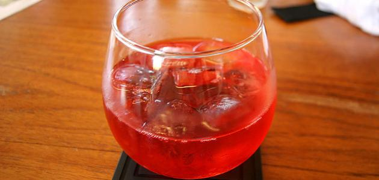

طريقة عمل الكركديه للضغط المرتفع
كتابة سناء الدويكات

الكركديه
الكركديه أو الكجرات هو نبات ذو ساق وأزهار وأوراق حمراء، يصل طوله لحوالي المترين، ويُستخدم للزينة أو الأكل أو العلاج. إنّ عصير الكركديه المصنوع من أوراق النبتة المجفّفة والمغليّة أو المنقوعة بعد تحليته هو ذو فوائد كبيرة، ويمكن شرب هذا العصير بارداً أو ساخناً، وهو عصير مشهور خصوصاً في مصر وسوريا.
فوائد الكركديه
إنّ لعصير الكركديه فوائد عديدة، نذكر منها:
- بسبب احتوائه على فيتامين C
، فإنّه يساعد في المحفاظة على درجة حرارة الجسم الطبيعية، كما يحافظ على توازن السوائل في الجسم؛ ولهذا يكثر شربه في الصيف.
- يقوّي القلب وضرباته، ويعزّز الدورة الدموية، ويعالج ضغط الدم المرتفع والمنخفض، حيث إنّ شربه ساخناً يساعد مرضى ضغط الدم المنخفض على رفعه، أمّا شربه بارداً فيساعد أصحاب ضغط الدم المرتفع على خفضه.
- يحافظ على مستوى الكولسترول. يقوّي الجهاز التنفّسي، فيشفي نزلات البرد والكحّة، ويعالج السلّ والسلّ الرئوي.
- يعالج تقرّحات الجلد.
- يخفّف الإمساك ويعالج ألم المعدة والأمعاء، ويهدّئ من ألم تقلّصات الرحم، ويعالج الديدان الشريطيّة والأسطوانية، ويحمي الكبد.
- يحدّ من نموّ الأورام السرطانية، ويشفي الكوليرا، ويعتبر مضاداً للاكتئاب.
- يخفّف ألم الروماتيزم والنقرس. يساعد على إنقاص الوزن.
- يستعمل في المواد التجميليّة كأحمر الشفاه، والشامبوهات، والصابون، ويستعمل لغسل الشعر لتثبيت لونه وإضافة لمعةٍ له.
طريقة إعداد الكركديه
لمن يعانون من ارتفاع ضغط الدم يمكنهم اتّباع الوصفات التالية:
وصفة الكركديه وأوراق الزيتون
نحضّر مشروب الكركديه مع أوراق الزيتون باتّباع الطريقة التالية:
المكوّنات:
- ملعقة كبيرة من أوراق الزيتون.
- ملعقة كبيرة من ازهار الكركدية.
- كوب من الماء. ملعقة كبيرة من العسل.
طريقة التحضير:
- ننظّف أوراق الزيتون الطازج أو الجاف، ثمّ نخلطها مع ملعقة من أزهار الكركديه.
- نضعها مع كوب من الماء على النار حتى تغلي المكوّنات معاً، بعد أن تغلي نتركها جانباً لمدّة عشر دقائق مع تغطيتها.
- نصفي المشروب ونحليه بالسكر أو العسل، ونشرب منه يومياً بمقدار كوب.
مشروب الكركديه الساخن المكوّنات:
- كوب من الماء المغلي.
- نصف ملعقة كبيرة من أوراق الكركديه.
- سكر أو عسل للتحلية.
طريقة التحضير:
نُحضر فنجاناً من الماء الساخن، ونضيف إليه ملعقةً من أوراق الكركديه، ويمكن أن نضيف السكر للتحلية، ولكن يجب ألّا يتمّ تناول أكثر من فنجانين للكبار يومياً.
أضرار الكركديه
هناك العديد من الفوائد للكرديه كما ذكرنا، ولكن هناك بعض الأضرار لهذا النبات، لذلك يجب عدم الإفراط في تناوله، ومن أهمّ أضراره ما يلي:
- من غير المستحسن شرب الكركديه للأشخاص الّذين يعانون من الضغط المنخفض؛ فعندها سيصابون بالدوخة والضعف وتلف في القلب أو الدماغ وانخفاض حاد في ضغط الدم.
- لا ينصح بالكركديه للنساء الحوامل؛ لأنّه محفّز للطمث ممّا قد يؤثّر بشكل سلبي في مرحلة العمل.
- البعض قد يتأثر جسمهم عند شرب الكركديه فتراهم كالمخمورين ويبدؤون بالهلوسة، لذا يجب الانتباه لرد فعل الجسم قبل القيام بأيّ نشاط، أو قد يصابون بحساسية منه كحكّة العيون الحمراء، وحساسيّة الجيوب الأنفية، وقد تصل الى الإصابة بحمى القش.
- يعتبر الكركديه مدرّاً للبول ومحفّزاً لإفراز الصفراء؛ لذا ينصح بعدم الإكثار من شربه بكميّات كبيرة.
المصدر
لن يتم نشر عنوان بريدك الإلكتروني